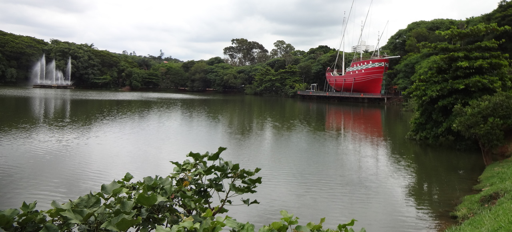
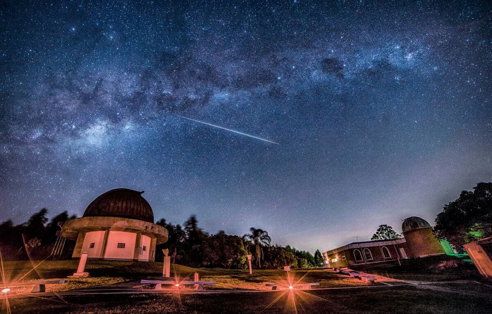
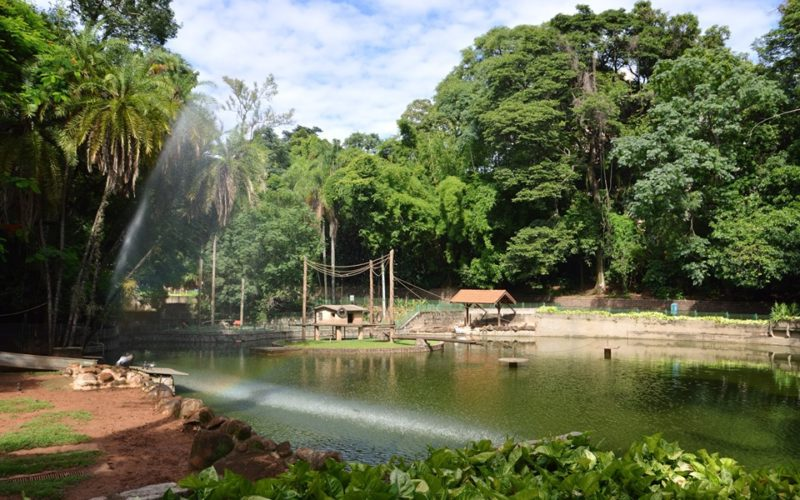
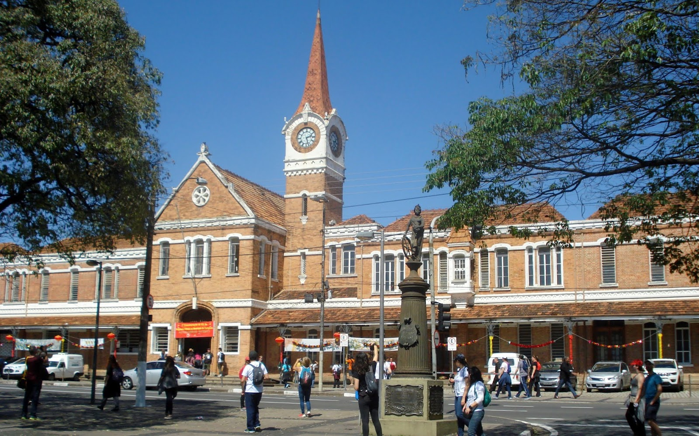
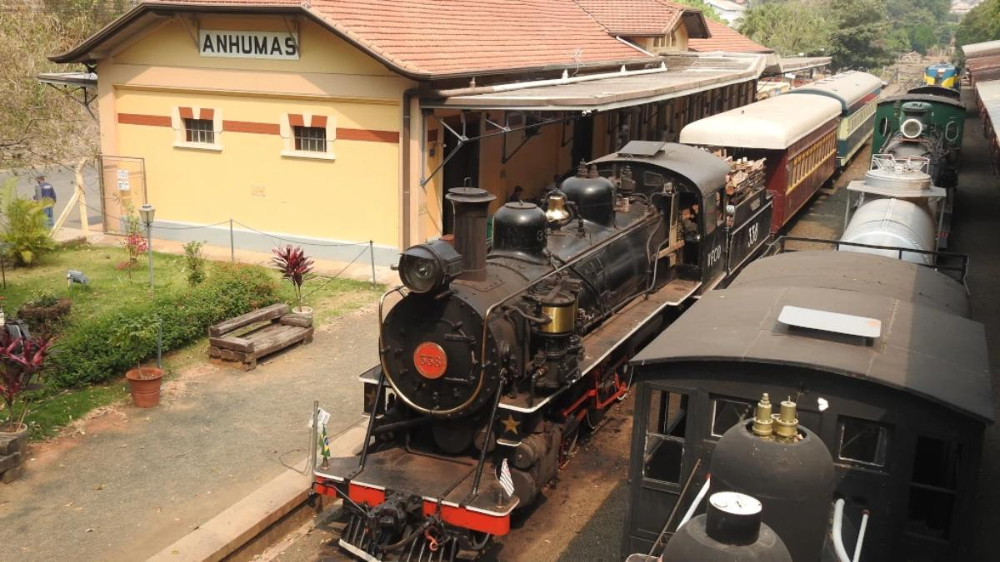
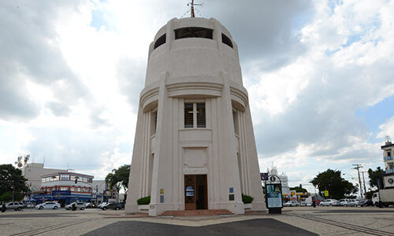

Localização
Localizada a menos de 100km de distancia da capital São Paulo, Campinas é uma cidade em ascenção. Com mais de 1 milhão de habitantes, é considerada uma metropole no interior do estado.
Mas não se deixe assustar pelo tamanho e imponência da cidade. Campinas possui muitos atrativos para todos os gostos.
A seguir alguns pontos turísticos bem interessantes de se conhecer na cidade.
Pontos Turísticos
Parque do Taquaral

O parque do Taquaral é um dos maiores parques da região, com uma extensão de 33 alqueires.
O Complexo Taquaral, reúne uma grande variedade de espaços recreativos e culturais, a começar pela Lagoa Isaura Telles Alves de Lima, na qual é possível passear de pedalinhos e conta com o espetáculo de “águas dançantes” de uma fonte sonora aos finais de semana.
Já na extensa área verde que rodeia a lagoa principal, tradicionalmente utilizado para caminhadas e corridas, encontram-se bosques destinados a piquenique; área com aparelhos de ginástica; 2 playgrounds, lanchonete, sanitários e um percurso de 3 km de bondinho.
Museu Aberto de Astronomia

O Museu Aberto de Astronomia, conhecido como MAAS, conta com 13 atividades que transmitem os mais diversos lados da Astronomia Clássica e Moderna, sendo algumas formatadas exclusivamente para escolas.
São diversos ambientes e equipamentos, é possível fazer observações solares e noturnas, conhecer mais sobre o sistema solar e a história do nosso planeta.
Bosque dos Jequitibás

O Bosque dos Jequitibás, criado na década de 1880, é um parque localizado na Região Central da cidade de Campinas, sendo uma das maiores e mais antigas áreas de lazer da cidade, com aproximadamente 1 milhão de visitantes por ano.
Possui uma área total aproximadamente 10 ha, enquanto a área de reserva florestal nativa da Mata Atlântica é de 2,33 ha, misturada a outros tipos de vegetação e edificações.
Estação Cultura

Inaugurada em 1884, a estação da Companhia Paulista de Estradas de Ferro é um marco no Centro de Campinas, mantendo todo o esplendor da época cafeeira. Construída com tijolos importados da Inglaterra, preserva até hoje a arquitetura que remete à Era Vitoriana.
Manteve viagens de trens de passageiros até 2001, quando o serviço foi desativado e o espaço acabou ocupado pela Prefeitura para a realização de atividades culturais. Hoje denominada como Estação Cultura “Prefeito Antonio da Costa Santos”, é palco de espetáculos de música, dança, teatro, feiras literárias, gastronômicas, entre outros eventos.
Estação Anhumas - Passeio de Maria Fumaça

Nesta estação situam-se as oficinas de restauro da Maria Fumaça de Campinas, inaugurada em novembro de 1929.
É um dos pontos turísticos da cidade. Proporciona um agradável passeio de trem. Com percurso total de 24 km, o passeio da Maria Fumaça recupera a história da Companhia Mogiana de Estrada de Ferro e do ciclo cafeeiro de Campinas e região.
Torre do Castelo

A Torre do Castelo, antes conhecida como O Castelo D'água, era uma caixa de água de 27 metros de altura construída em um dos pontos mais altos de Campinas, erguido em 1940 em local estratégico para o desenvolvimento urbano da cidade, foi criado para abastecer os bairros que se formavam na região norte.
Na década de 1970, o obelisco, construído em art déco, ganhou um mirante que proporciona uma visão de 360 graus da cidade. Em condições climáticas favoráveis, dá para enxergar até a Serra do Japi, a 40 quilômetros de distância.